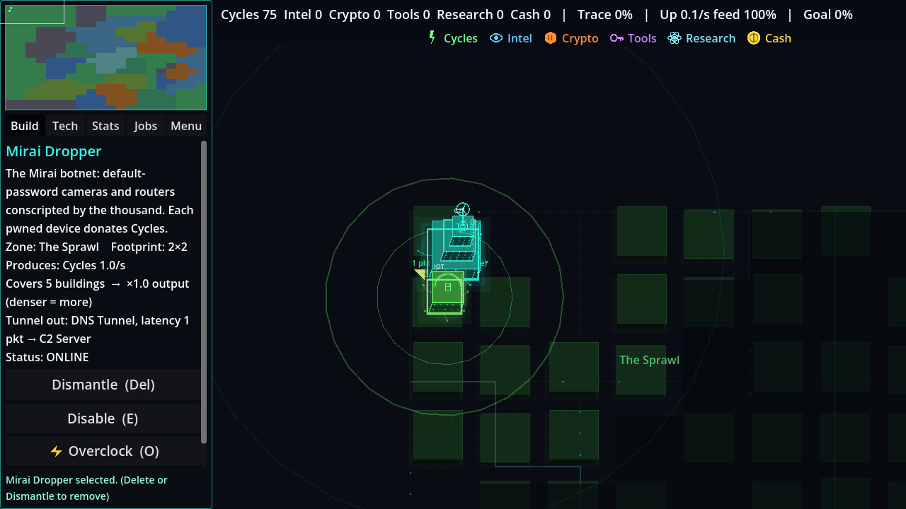
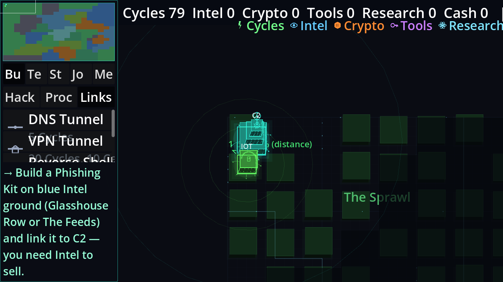
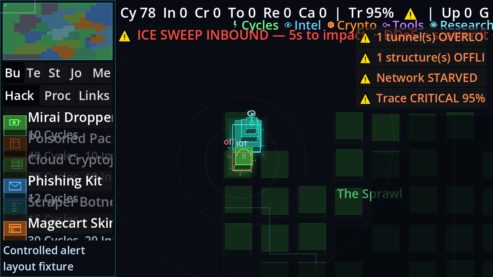
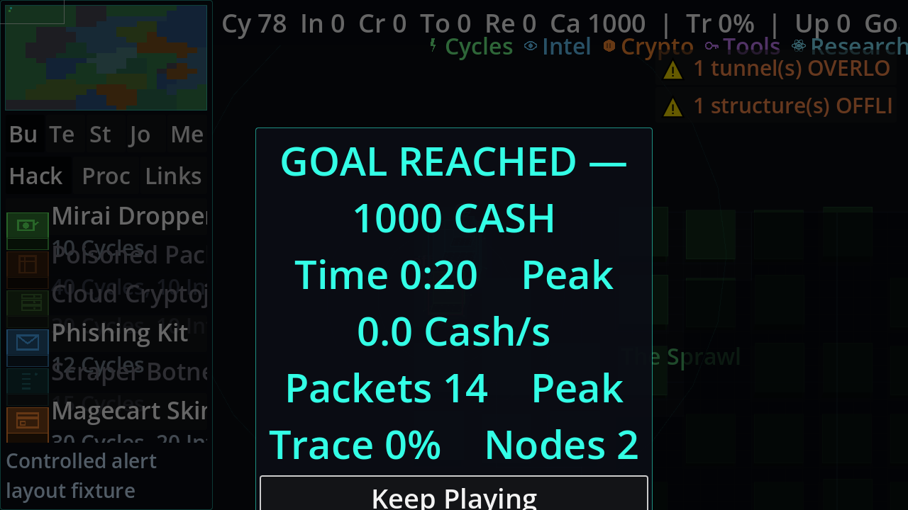

RIM: 100 bugs and improvements
44 bugs · 56 improvements across game design, simulation, every major interface area and performance. Reviewed 3 October 2026, with v0.6.7 rechecks. Production code was not edited.
Evidence separates actual input-driven opening play, controlled correctness/UI fixtures, source inspection and design proposals. Dense-network benchmarks are synthetic stress tests, not full-campaign FPS. Full report and methods · CSV backlog · JSON backlog
This snapshot covers the main game. The Netrun prototype added after the cutoff is outside the played evidence.
Start with atomic/validated saves, safe backup rotation, modal keyboard focus and 100–200% layouts. Then fix misleading network feedback and reduce rendering costs. The proposed discovery base is scan → reveal → hack → persistence → optional payload → scan further.
Performance context and limits
Godot 4.7.2 / OpenGL Compatibility / 1280×720 / RTX 3060 Laptop / Ryzen 5 5600H. Fixed camera, VSync disabled. Rendering harness drives redraw/time and 10Hz ticks; UI runs normally. Headless timings are CPU work only.
| Fixture | Measured result |
|---|
| Paused opening | 2595 draw calls; 11.99ms median interval |
| Synthetic 50 / 150 / 400 nodes, motion on | 30.89 / 86.15 / 119.89ms median interval |
| Synthetic 400 nodes, reduced motion | 35.97ms median interval |
| Synthetic 400-node fog rebuild | 40.25ms mean CPU |
| Synthetic 3000 packets | 9.235ms mean movement CPU |
Rendered interface evidence

Actual legal opening / inspector, baseline v064

Actual Settings200% / palette, baseline; source-rechecked in final snapshot

Controlled alerts200%, fresh final-snapshot render

Controlled victory200%, fresh final-snapshot render